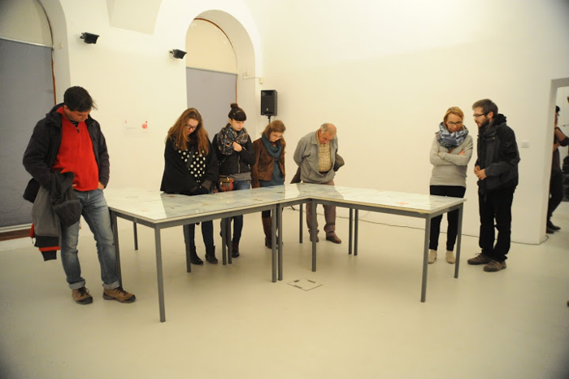
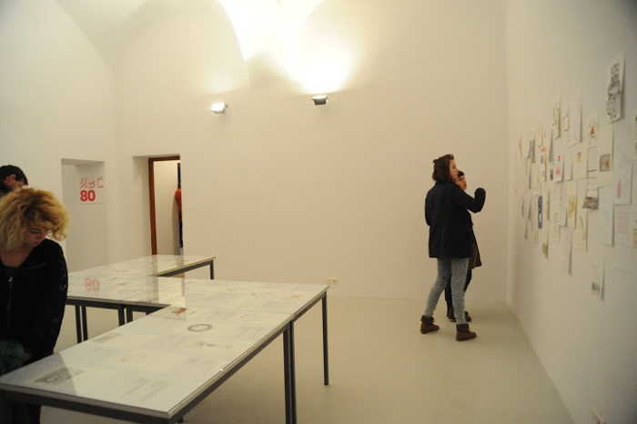
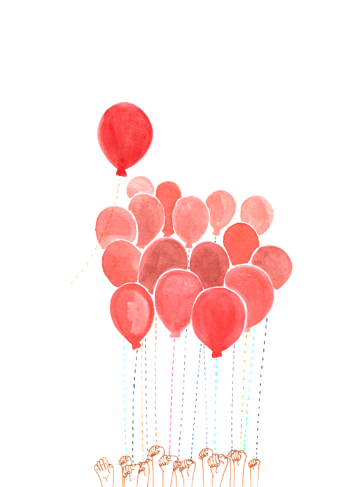
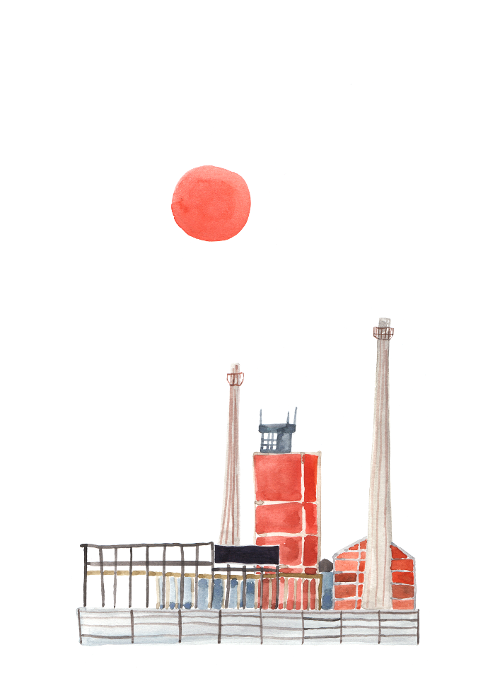
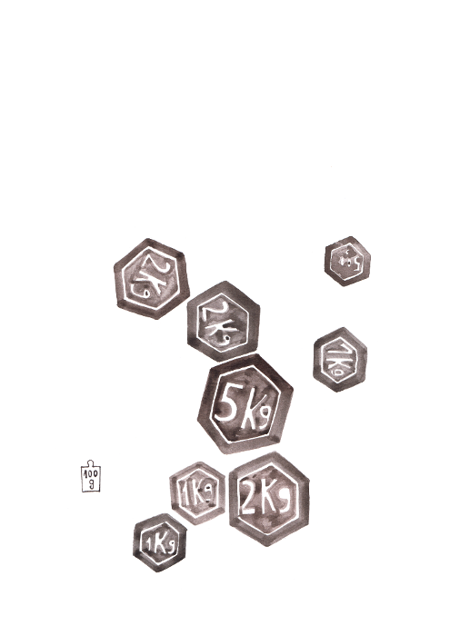
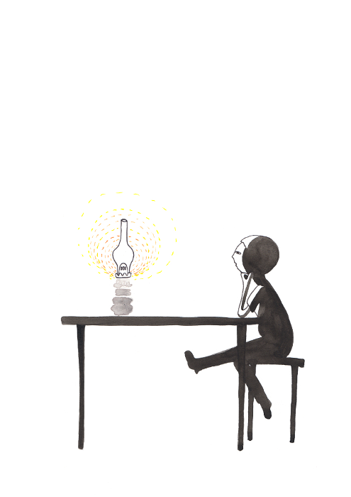

ABC 80 Catalina NISTOR & MÁRTON Evelin Expozitie in cadrul Design Week, 3-8 noiembrie 2015, Spatiul Expozitional de Arta Contemporana MAGMA, Sf. Gheorghe. Proiect realizat in colaborare cu Márton Evelin, scriitoare. 
http://www.magmacm.ro   